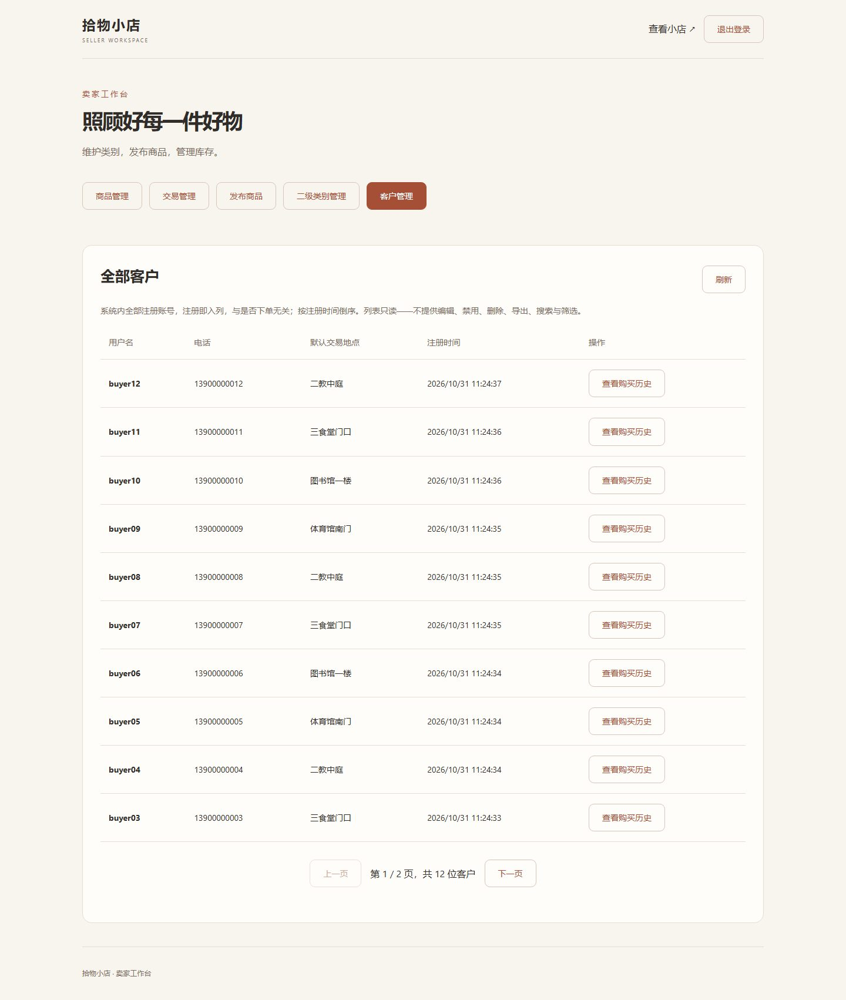
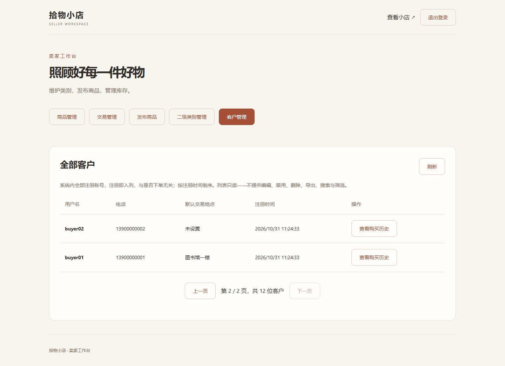
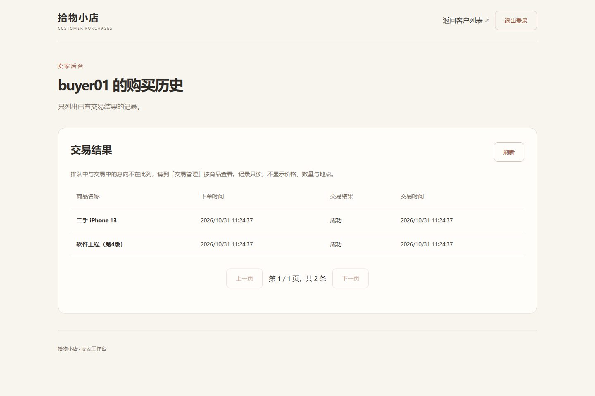
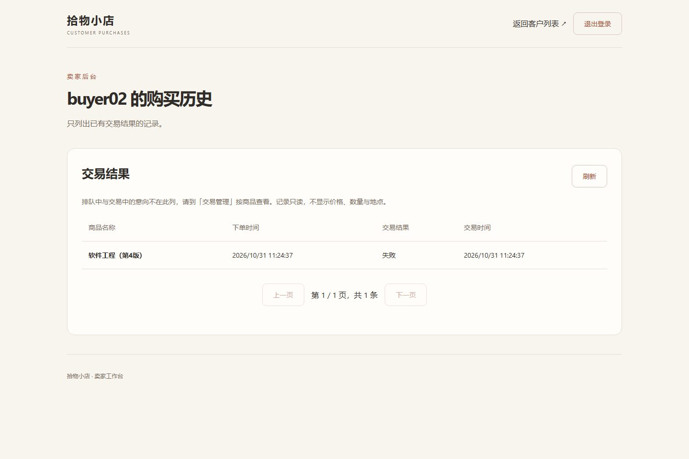
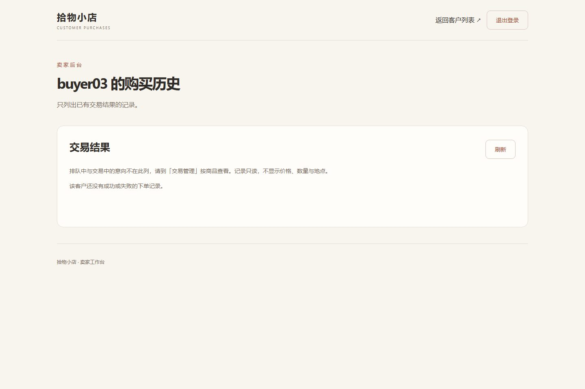
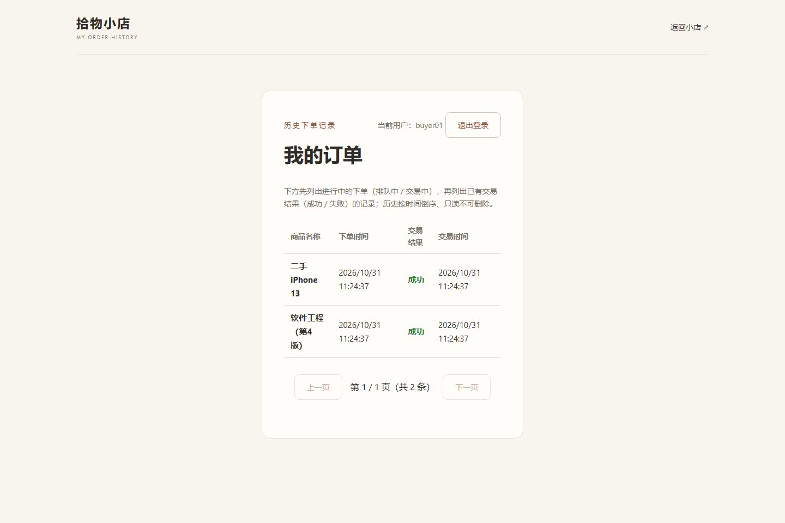
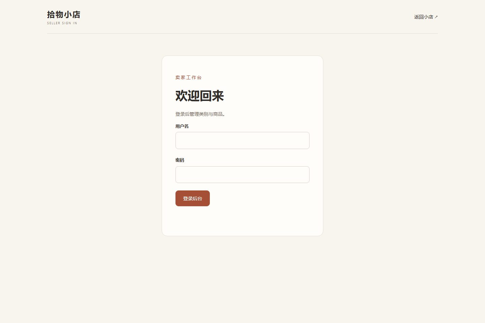
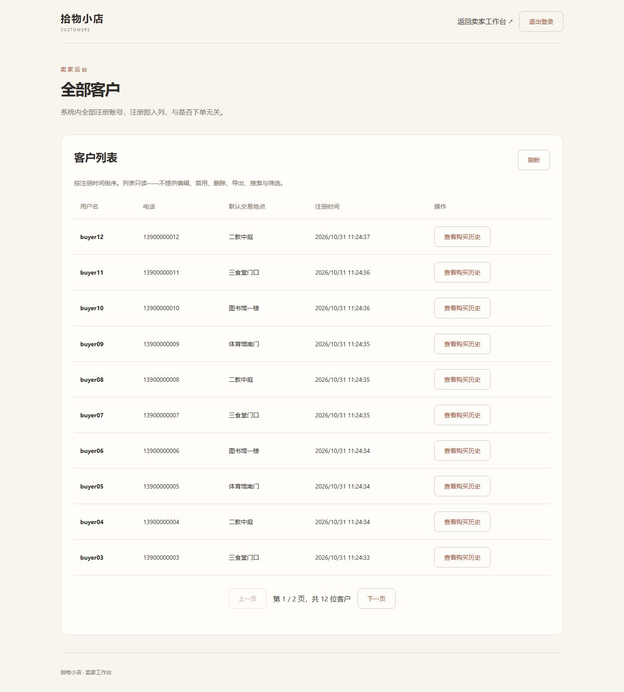

客户管理模块截图画册
9 张图对应查看客户列表（FR-S-13）与查看客户购买历史（FR-S-14）的 9 个自检场景，来自本地隔离环境的真实浏览器截图；演示数据为临时数据。图片未补齐时下方会显示占位提示。
01_后台客户管理列表第一页
后台页签栏「客户管理」高亮；列表显示 10 行，四列字段；翻页显示「第 1 / 2 页，共 12 位客户」
待补充：截图/01_后台客户管理列表第一页.jpg')">02_客户列表第二页_默认交易地点未设置
第二页显示 buyer02 与 buyer01；buyer02 注册时未填默认交易地点，显示「未设置」
待补充：截图/02_客户列表第二页_默认交易地点未设置.jpg')">03_购买历史_成功两条
从客户列表点「查看购买历史」进入 buyer01 的历史页：2 条记录均为「成功」，含下单时间与交易时间
待补充：截图/03_购买历史_成功两条.jpg')">04_购买历史_失败一条
buyer02 的购买历史：1 条「失败」记录；只列已终结交易
待补充：截图/04_购买历史_失败一条.jpg')">05_购买历史为空_仅排队中
buyer03 只有一笔排队中的意向，未进入交易，历史页显示空态提示
待补充：截图/05_购买历史为空_仅排队中.jpg')">06_买家端我的订单对照
buyer01 自己登录买家端「我的订单」：同样 2 条成功记录，商品名、时间与 03 一一对应（与卖家端一致）
待补充：截图/06_买家端我的订单对照.jpg')">07_未登录访问客户列表跳转登录
未登录直接打开 /customers.html，自动跳转到卖家登录页
待补充：截图/07_未登录访问客户列表跳转登录.jpg')">08_未登录访问购买历史跳转登录
未登录直接打开 /customer-purchases.html?id=1，同样跳转到登录页
09_客户列表独立页_已登录
已登录时直接访问独立页 /customers.html，与后台「客户管理」页签共用同一组接口
待补充：截图/09_客户列表独立页_已登录.jpg')">